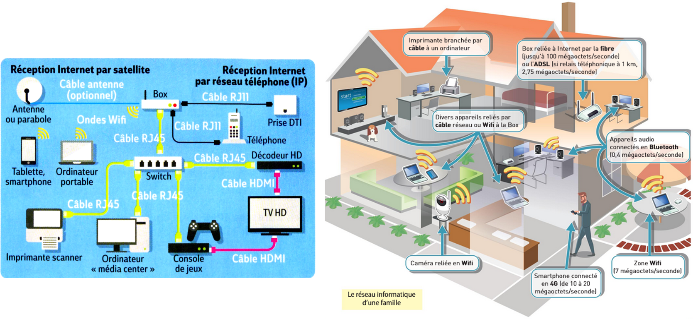
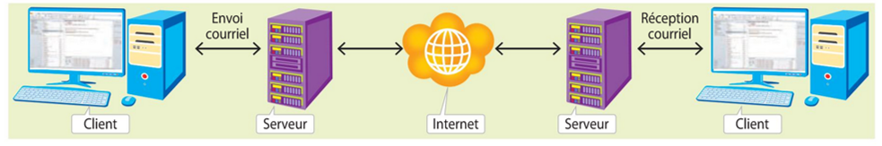
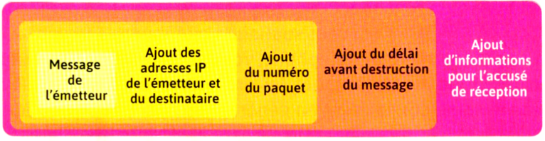
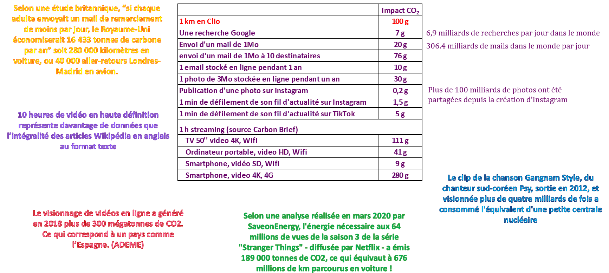

Lien vers "Tester ses connaissances" du manuel Delagrave : lien
Vidéo Delagrave P36-37 : histoire des données structurées
Internet : un réseau de réseaux
Internet est un système d’interconnexions de machines et constitue un réseau informatique mondial, utilisant un ensemble standardisé de protocoles (ensemble de règles) de transfert de données.
C’est donc un réseau, sans centre nerveux, composé de millions de réseaux aussi bien publics que privés, universitaires, commerciaux et gouvernementaux.
Internet transporte un large spectre d’informations et permet l’élaboration d’applications et de services variés comme le courrier électronique, la messagerie instantanée et le World Wide Web.
D’après Wikipédia


Schématisation d’un réseau

Schéma d'un mini réseau - Source pixees.fr
Exemples de réseaux domestiques

Le modèle client-serveur et les requêtes – exemple sur les mails

Pour qu’un client puisse se connecter à Internet il faut :
Vidéo Un réseau bien physique (1:05 à 2:45) :
Les câbles sous-marins sont des fibres optiques encapsulées, posées sur les fonds marins entre les continents.
En 2020, plus de 473 câbles sous-marins sont répertoriés à travers le monde pour une longueur totale d’environ 1,3 million de kilomètres, soit plus de trois fois la distance de la Terre à la Lune.
Le record : 39.000 kilomètres de long pour le câble SEA-ME-WE 3, qui relie l’Asie du Sud-Est à l’Europe de l’Ouest en passant par la mer Rouge.
95% des communications mondiales transiteraient par des câbles sous-marins en fibre optique
99% des communications intercontinentales
Plus de 50 % des investissements sont maintenant réalisés par les GAFAM
Capacité : un câble peut transporter jusqu’à 200 térabits/seconde.


Vidéo Rosace Fibre : Qu'est ce que la fibre otique ?
Cartographie des câbles sous marins - source submarinecablemap.com

Vidéo du manuel P40 :
Un switch est une sorte de « multiprise intelligente » qui permet de relier entre eux tous les ordinateurs appartenant
à un même réseau (réseau « local »)

Un routeur permet de relier ensemble plusieurs réseaux, il est composé d’un nombre plus ou moins important d’interfaces réseau (cartes réseau).
Les routeurs les plus simples que l’on puisse rencontrer permettent de relier ensemble deux réseaux (ils possèdent alors 2 interfaces réseau),
mais il existe des routeurs capables de relier ensemble une dizaine de réseaux.

Les routeurs fonctionnent grâce à des tables de routage et des protocoles de routage.
Si l’adresse IP de destination fait partie d’un réseau différent des siens, le routeur consulte sa table de routage qui définit
le chemin à emprunter pour une adresse donnée.
Le protocole de routage permet la mise à jour automatique de la table afin qu’elle contienne à tout moment la route optimale.

Le protocole TCP (Transmission Control Protocol) est un ensemble de normes régissant les transmissions de données entre émetteur et récepteur par paquets numérotés et s’assurant de leur assemblage et de leur intégrité.
Le protocole IP (Internet Protocol) est un ensemble de normes permettant d’identifier, de nommer les appareils connectés à internet par l’attribution d’une adresse spécifique, dite adresse IP, et d’orienter les transferts de données.
Chaque machine du réseau internet possède une adresse IP.
Il existe deux types d’adresse : IPv4 (Internet Protocol version 4) et IPv6
/IPv4-vs-IPv6-EN.png?width=3300&name=IPv4-vs-IPv6-EN.png)
Commandes ipconfig, ping, tracert : démonstration
TCP/IP repose sur la notion de paquets de données.
Si par exemple on désire envoyer un fichier (son, photo, vidéo ou texte...), les données qui constituent ce fichier vont être "découpées" en plusieurs
morceaux et chaque morceau sera envoyé dans un paquet différent. Une fois tous les paquets arrivés à destination, le fichier d'origine pourra être reconstitué.
L’encapsulation consiste à ajouter au paquet toutes les indications lui permettant d’arriver à bon port.


Structure d’une adresse symbolique : fr.wikipedia.org

Un serveur DNS est en réalité un système reposant sur un grand nombre d’ordinateurs pour établir la correspondance entre
une adresse symbolique (ex : www.allocine.fr) et son adresse IP (ex : 104.18.38.142).

Démonstrations :my-ip-finder
Ne pas avoir accès à Internet ou ne pas savoir utiliser les outils numériques représentait un handicap pour près de 17% de la population française en 2019. Cet illettrisme numérique, appelé "illectronisme" touche en particulier les populations les plus fragiles.


La neutralité du net est l’un des principes fondateurs d’internet, qui exclut la création d’accès à internet « à plusieurs vitesses », par une
gestion favorisant certains flux d’information au détriment d’autres (discrimination), ou la création d’accès à internet limités (à certains contenus ou
certaines plateformes).
En France, c’est l’Arcep qui est chargée de veiller au respect de la neutralité du net.
La neutralité du net est actuellement mise à mal :

Les serveurs de messagerie communiquent entre eux via des protocoles.
Le protocole sortant : SMTP, réceptionne et centralise les messages envoyés
Les protocoles entrants POP et IMAP gèrent l’authentification du titulaire du compte ; ils organisent la récupération des messages.

Source it-connect.fr
Modèle d’échange sur internet où chaque entité est à la fois client et serveur, partiellement ou totalement décentralisé

Source cryptoast.fr